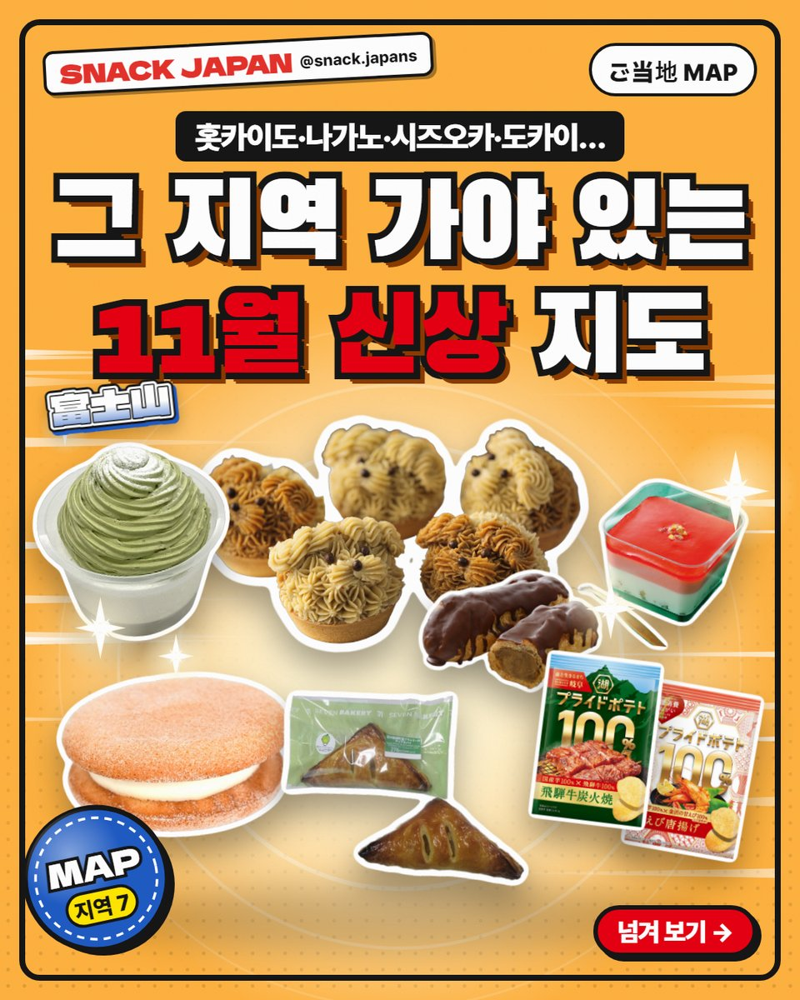
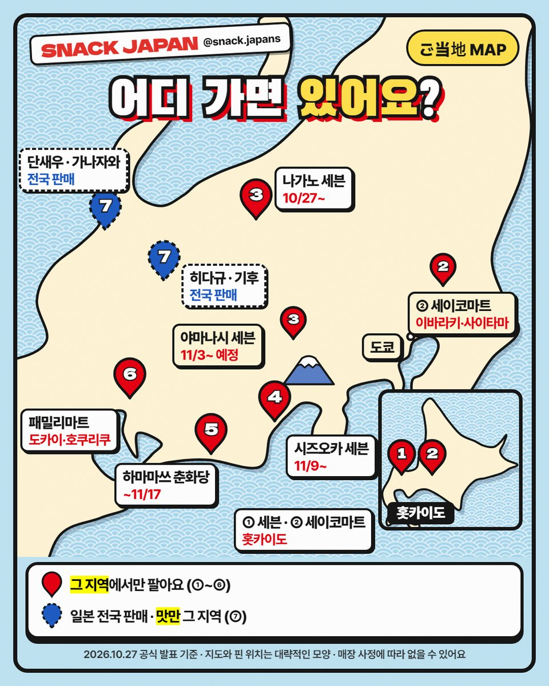
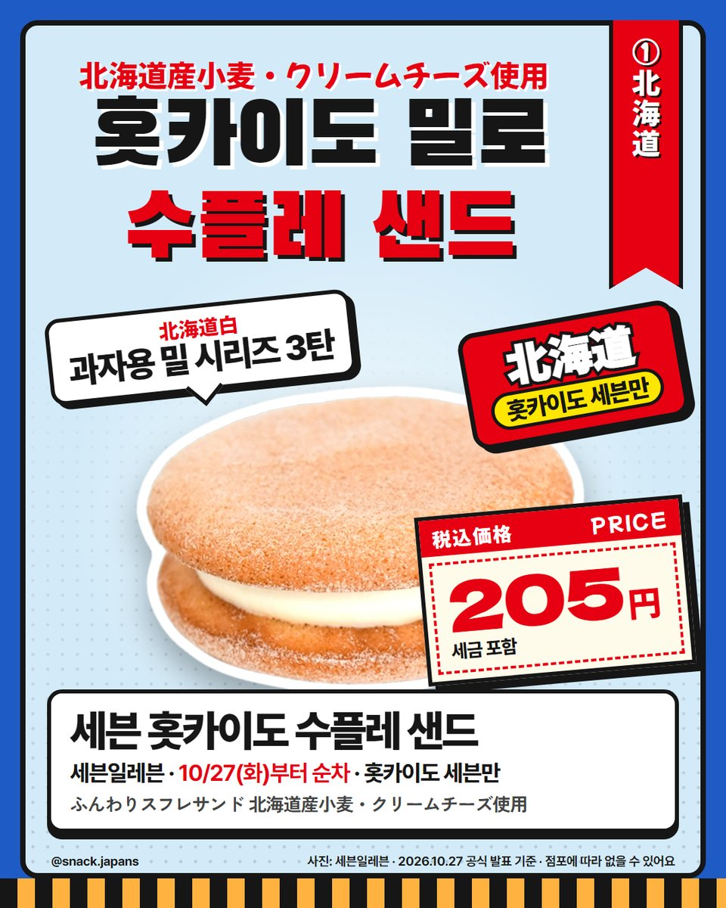
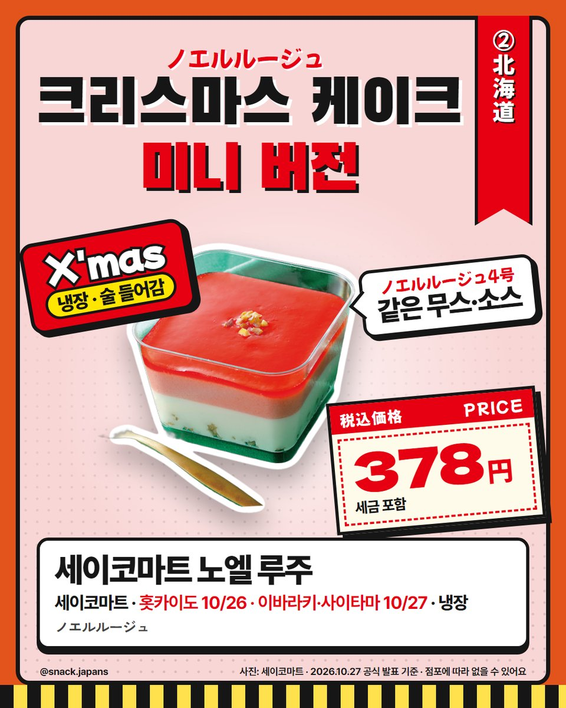
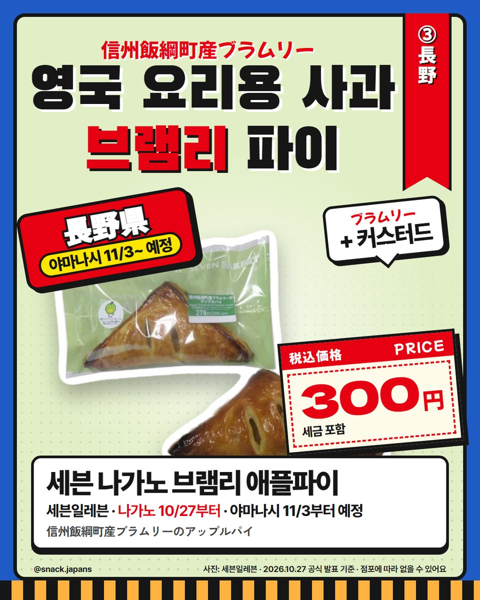
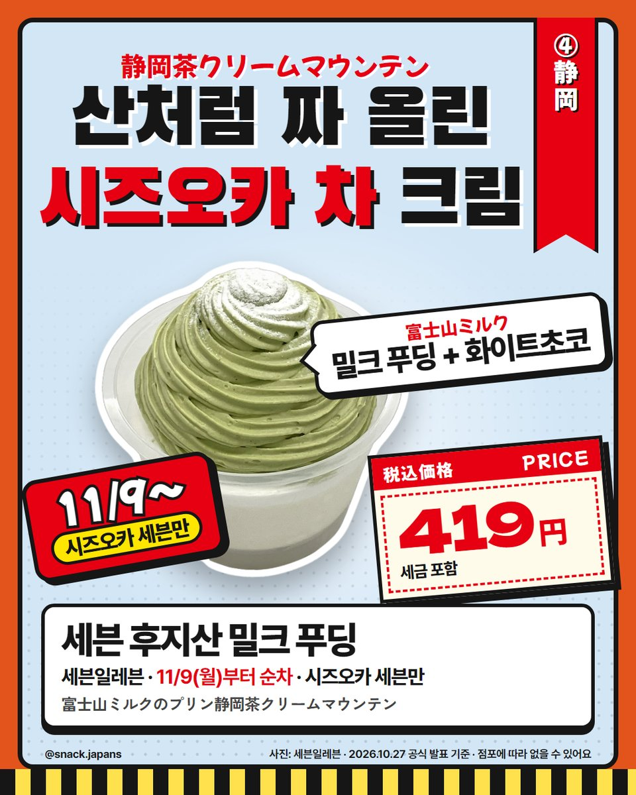
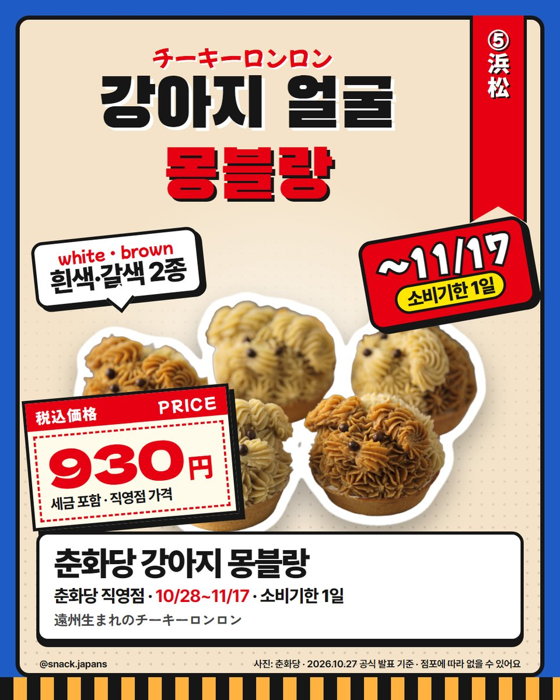
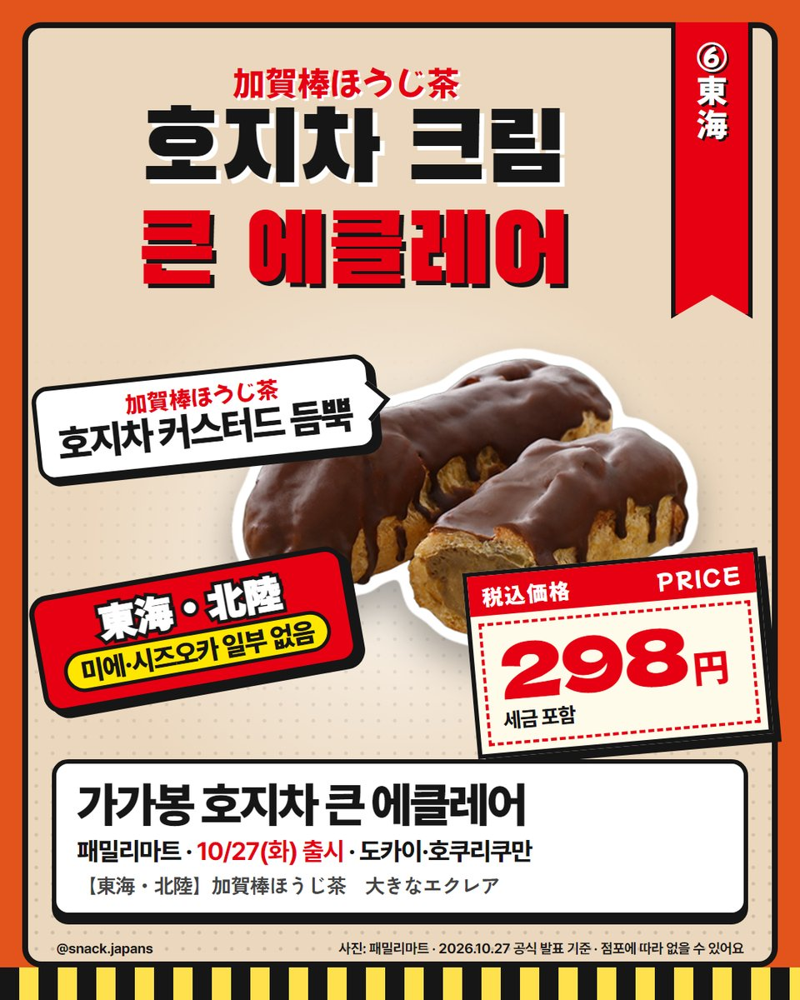
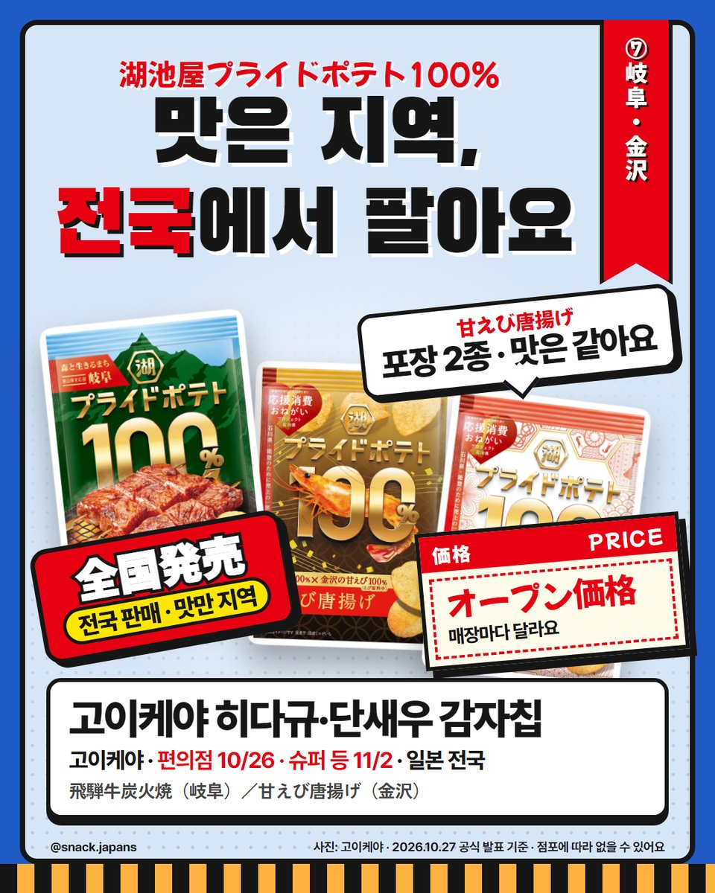

일본 지역 한정 편의점 신상 지도, 홋카이도·나가노·시즈오카 가야 있는 것
홋카이도 수플레 샌드부터 시즈오카 후지산 푸딩, 하마마쓰 강아지 몽블랑까지! 그 지역에 가야 있는 신상을 지도로 정리했어요.
일본 편의점 신상 중엔
그 지역에 가야만 있는 게 있어요 🗾
홋카이도·나가노·시즈오카·도카이…
다음 일본 여행지에서 찾아볼 수 있게 지도로 정리했어요.
각 회사 공식 발표 기준이에요!


1. 홋카이도 — 세븐 '폭신 수플레 샌드'
- 파는 곳: 홋카이도 세븐일레븐만 (10/27부터 순차)
- 홋카이도 첫 과자용 밀 '北海道白'를 쓴 디저트 시리즈 3탄 (4월 롤케이크·7월 핫케이크 다음)
- 폭신한 수플레 반죽에 홋카이도산 크림치즈 크림 (세븐일레븐 설명)
- 가격: 사진 카드에 정리해 뒀어요

2. 홋카이도 등 — 세이코마트 '노엘 루주'
- 파는 곳: 세이코마트 홋카이도 10/26, 이바라키·사이타마 10/27
- 크리스마스 케이크 '노엘 루주 4호'와 같은 무스·소스를 쓴 미니 사이즈 (세이코마트 설명)
- 화이트초코 + 베리
- 냉장 케이크, 술이 들어 있어요

3. 나가노 — 세븐 '브램리 애플파이'
- 파는 곳: 나가노현 세븐일레븐 10/27부터 순차 · 야마나시현은 11/3부터 순차 예정
- 영국 원산 요리용 사과 '브램리'(신슈 이즈나마치산) 필링 + 커스터드, 버터 향 파이 (세븐일레븐 설명)
- 12월부터는 다른 나가노 사과 품종 상품도 나올 예정이래요

4. 시즈오카 — 세븐 '후지산 밀크 푸딩'
- 파는 곳: 시즈오카현 세븐일레븐만, 11/9부터 순차
- '후지산 밀크'로 만든 밀크 푸딩 + 시즈오카 차·화이트초코 크림 (세븐일레븐 설명)
- 녹차 크림을 산처럼 높게 짜 올린 모양이에요 (사진 기준)

5. 하마마쓰 — 춘화당 '강아지 몽블랑'
- 이름: 遠州生まれのチーキーロンロン (치키 론론)
- 파는 곳: 춘화당 직영점 (우나기파이 팩토리 제외), 10/28~11/17
- 짜낸 몽블랑 크림이 강아지 얼굴 모양, 흰색·갈색 2종
- 10/17 '제4회 전국 몽블랑 대회' 우승작을 상품으로 만들었대요 (춘화당 설명)
- 소비기한이 1일이라 사면 그날 먹어야 해요

6. 도카이·호쿠리쿠 — 패밀리마트 '가가봉 호지차 큰 에클레어'
- 파는 곳: 패밀리마트 도카이·호쿠리쿠 (미에현 일부·시즈오카현 일부 점포 없음), 10/27~
- '가가봉 호지차' 커스터드 크림을 듬뿍 넣고 크기에도 신경 썼대요 (패밀리마트 설명)
- 냉장 디저트예요

7. 맛만 지역! 고이케야 히다규·단새우 감자칩
이 두 개는 지역 한정이 아니라 일본 전국에서 팔아요.
- 파는 곳: 일본 전국 편의점 10/26 → 슈퍼 등 일반 매장 11/2
- 히다규 숯불구이(기후): 2023년 지리적 표시(GI)에 등록된 '히다규'를 쓴 감자칩
- 단새우 가라아게(가나자와): 같은 맛에 포장이 2종 (금색 / 구타니야키 붉은 무늬)
- 가격: 오픈 가격이라 매장마다 달라요

총평
- 추천: 홋카이도·나가노·시즈오카·나고야 쪽 여행 계획 있는 분, 지역 한정 과자 모으는 분
판매 지역과 날짜는 바뀔 수 있으니
가기 전에 한 번 더 확인해 보세요!